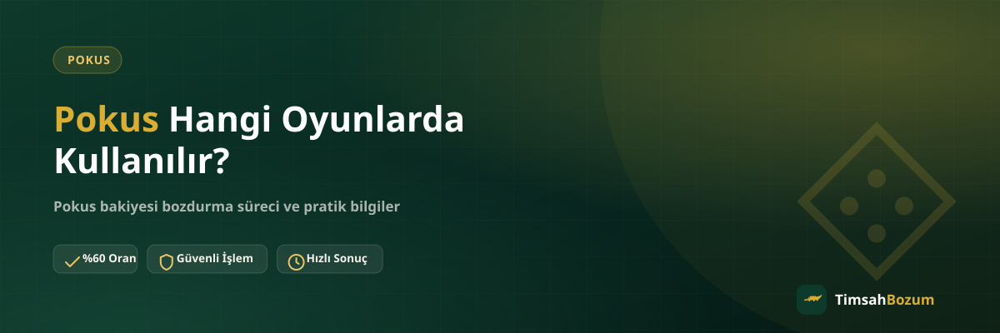

Pokus bakiyesi, mobil oyunlarda ve bazı dijital içerik platformlarında satın alma yapmak için kullanılan bir ödeme sistemi. Peki bu bakiye tam olarak hangi oyunlarda geçerli, her platformda mı kullanılabiliyor? Bu yazıda Pokus bakiyesinin nerede geçerli olduğunu, oyun içinde nasıl kullanıldığını ve kullanmadığın bakiyeyi değerlendirmenin yollarını anlatıyoruz.
Pokus Bakiyesi Nedir, Nasıl Çalışır?
Pokus, kullanıcıların kart veya operatör ödemesiyle bakiye yükleyip bu bakiyeyi dijital ortamda harcamasını sağlayan bir ödeme altyapısı. Yüklenen tutar doğrudan nakit değil, sistemin bağlı olduğu oyun veya platformda geçerli bir bakiye olarak hesaba yansır. Bu yapı, özellikle mobil oyunlarda oyun içi satın alma yaparken kart bilgisi girmeden hızlı ödeme yapmak isteyen kullanıcılar tarafından tercih ediliyor.
Pokus Hangi Platformlarda Geçerli?
Pokus bakiyesi, sistemin entegre olduğu oyun veya dijital içerik platformunda geçerlidir. Hangi oyunun veya uygulamanın bu sistemi desteklediği zamanla değişebileceği için, bakiyeni yüklerken veya kullanırken ilgili oyunun ödeme ekranındaki güncel bilgiyi kontrol etmen en sağlıklısı. Bakiyenin geçerli olduğu platform dışında, farklı bir oyun veya uygulamada bu bakiyeyi harcayamazsın.
Pokus Bakiyesi Oyun İçinde Nasıl Kullanılır?
Bakiye yüklendikten sonra genellikle oyun içi mağaza veya satın alma ekranından harcanır. Karakter, eşya, oyun içi para birimi veya benzeri dijital içerikler bu bakiyeyle satın alınabilir. Bakiyenin tamamını tek seferde harcamak zorunda değilsin, kalan tutar hesapta birikir ve ileride tekrar kullanılabilir.
Pokus Bakiyesi Her Oyunda Geçerli mi?
Hayır, Pokus bakiyesi yalnızca yüklendiği ekosistem içinde geçerli. Bir oyunda biriken bakiyeyi farklı bir oyuna veya uygulamaya taşıman mümkün değil. Bu yüzden birden fazla oyunla ilgilenen kullanıcılar bazen farklı hesaplarda küçük bakiyeler biriktirebiliyor, bu da bakiyenin verimli kullanılmasını zorlaştırabiliyor.
Birden Fazla Oyunda Pokus Bakiyem Varsa Ne Yapmalıyım?
Farklı oyunlarda veya platformlarda ayrı ayrı Pokus bakiyen birikmiş olabilir. Her hesaptaki bakiye kendi ekosisteminde geçerli olduğu için, bu bakiyeleri birleştirip tek bir yerde kullanman mümkün değil. Bunun yerine her hesap için ayrı ayrı WhatsApp üzerinden bozum işlemi başlatabilirsin; birden fazla bakiyen varsa hepsini aynı görüşmede belirtmen süreci kolaylaştırır.
Pokus Bakiyesi Yüklerken Nelere Dikkat Etmeli?
Bakiye yüklemeden önce hangi oyun veya platform için yükleme yaptığını ve bu bakiyenin o platform dışında geçerli olmadığını bilmek önemli. Yanlışlıkla farklı bir hesaba veya kullanmayı planlamadığın bir platforma yükleme yapmak, bakiyenin atıl kalmasına yol açabilir. Yükleme yapmadan önce tutarı ve hedef platformu bir kez daha kontrol etmek, ileride bakiyeyi değerlendirememe riskini azaltır.
Pokus Bakiyemi Yanlış Platformda Kullanmaya Çalışırsam Ne Olur?
Pokus bakiyesi, yalnızca yüklendiği platformun ödeme sistemi tarafından tanınır. Farklı bir oyunun ödeme ekranında bu bakiyeyi harcamaya çalıştığında sistem bakiyeyi görmez, çünkü bakiye o platformun kendi altyapısında tutulur. Bu durumda yapman gereken, bakiyenin yüklü olduğu platformu doğru belirlemek; kullanım alanı bulamıyorsan da bu bakiyeyi nakde çevirmeyi değerlendirebilirsin.
Kullanılmayan Pokus Bakiyesi Neden Bozdurulmalı?
Artık oynamadığın bir oyunda kalan bakiye ya da kullanım alanı bulamadığın küçük tutarlar, hesapta atıl kalır. Bu bakiyeyi iade almak veya başka bir platforma taşımak genelde mümkün olmadığı için, nakde çevirmek elindeki değeri değerlendirmenin pratik bir yolu oluyor. Pokus bozdurma hizmetiyle bu bakiyeyi WhatsApp üzerinden kısa sürede nakde çevirebilirsin.
Kampanya ile Yüklenen Pokus Bakiyesi Farklı mı?
Pokus bakiyesi bazen doğrudan satın alma yoluyla, bazen de kampanya veya hediye kapsamında hesaba tanımlanır. Kaynağı ne olursa olsun, bakiye aynı şekilde ilgili platformda geçerli olur ve aynı kurallara tabidir. Kampanya ile gelen bakiyeyi kullanmayı planlamıyorsan, bu bakiyeyi de aynı süreçle nakde çevirebilirsin.
Pokus Bakiyesini Bozdurmak Güvenilir mi?
Bozum işlemi, bakiye bilgini WhatsApp'tan paylaşman ve güncel oranı teyit etmenle ilerler. Üyelik, form doldurma ya da kimlik belgesi istenmez; hesabına erişim de talep edilmez. Tek yapman gereken güncel bakiyeni gösteren bir ekran görüntüsünü resmi hattımıza (+90 543 887 21 71) iletmek. İşlem öncesi hiçbir aşamada senden SMS doğrulama kodu istenmez; böyle bir talep gelirse bu, bozum süreciyle ilgisi olmayan bir dolandırıcılık girişimidir.
Pokus Bakiyesi Bozdurma Nasıl Yapılır?
WhatsApp hattımıza yazarak Pokus bakiyeni bozdurmak istediğini belirtiyorsun, bakiye ekran görüntünü paylaşıyorsun, güncel oranı teyit ediyorsun ve onay sonrası ödemeni alıyorsun. Bakiyenin tamamını bozdurmak zorunda değilsin, istersen bir kısmını hesabında bırakabilirsin. Güncel oranlar piyasa koşullarına göre değişebileceği için işlem öncesi WhatsApp'tan teyit almanı öneririz. Hat her gün 10:00 ile 03:00 arası açık, bu saatler dışında gönderdiğin mesaj hat açıldığında yanıtlanır.
İlgili Yazılar
- Pokus Bakiyesi Nedir, Nasıl Oluşur?
- Pokus Bakiyesi ile Oyun İçi Satın Alma Rehberi
- Pokus Bakiyesi Nasıl Yüklenir?
Pokus bakiyesi, yüklendiği oyun veya platformun ekosistemi içinde geçerli bir ödeme aracı. Hangi oyunda kullanılabileceğini öğrenmek için ilgili platformun ödeme ekranını kontrol edebilirsin; kullanmadığın bakiyeyi değerlendirmek istersen de WhatsApp hattımızdan yazarak kısa sürede nakde çevirebilirsin.